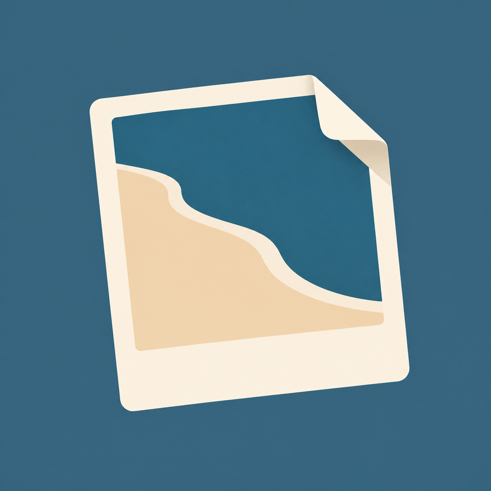
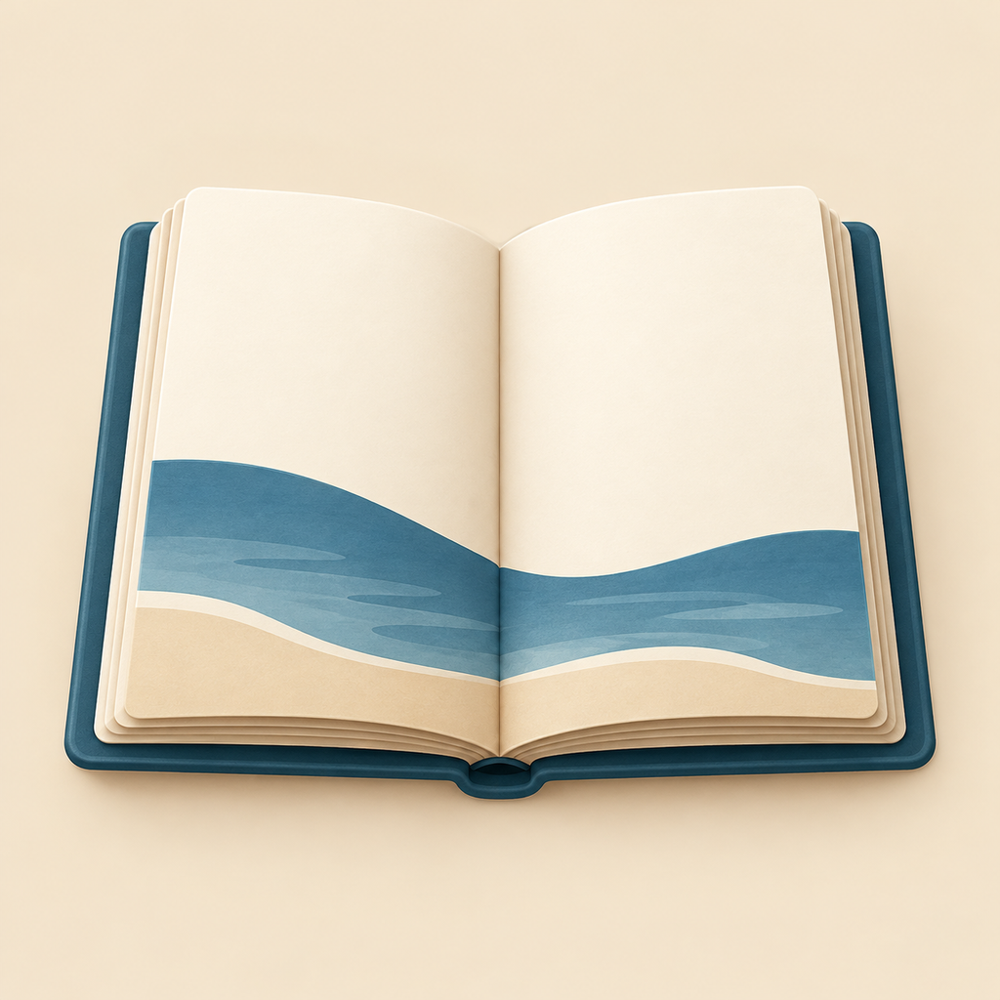
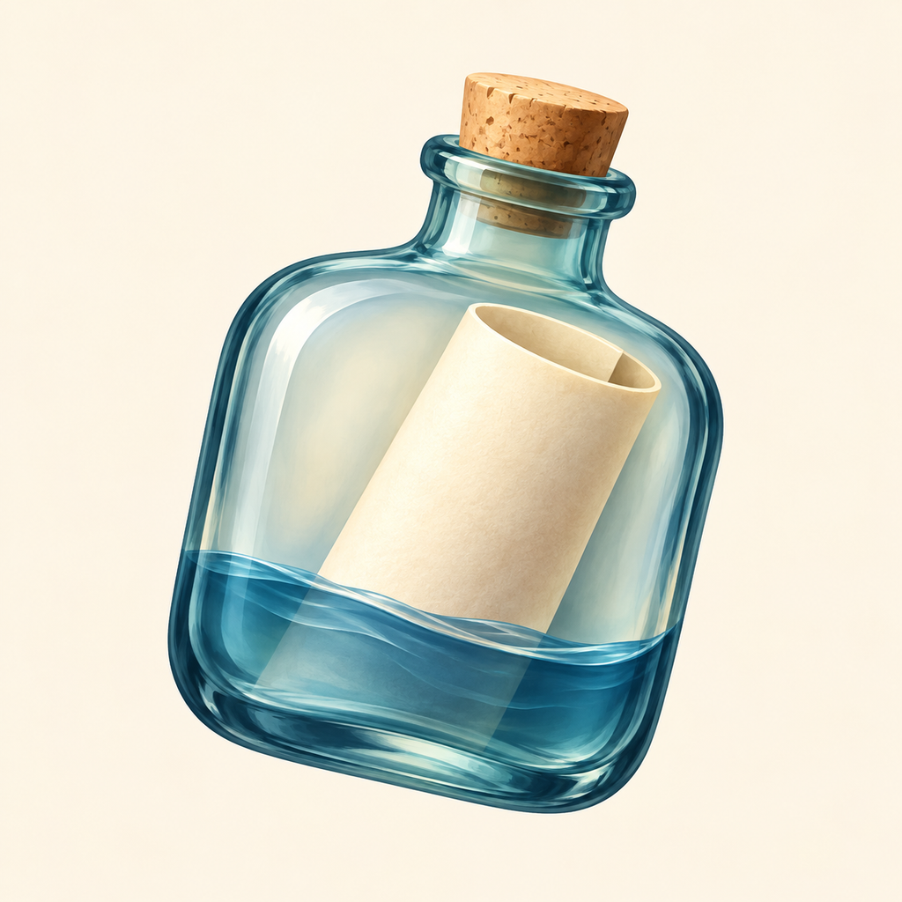
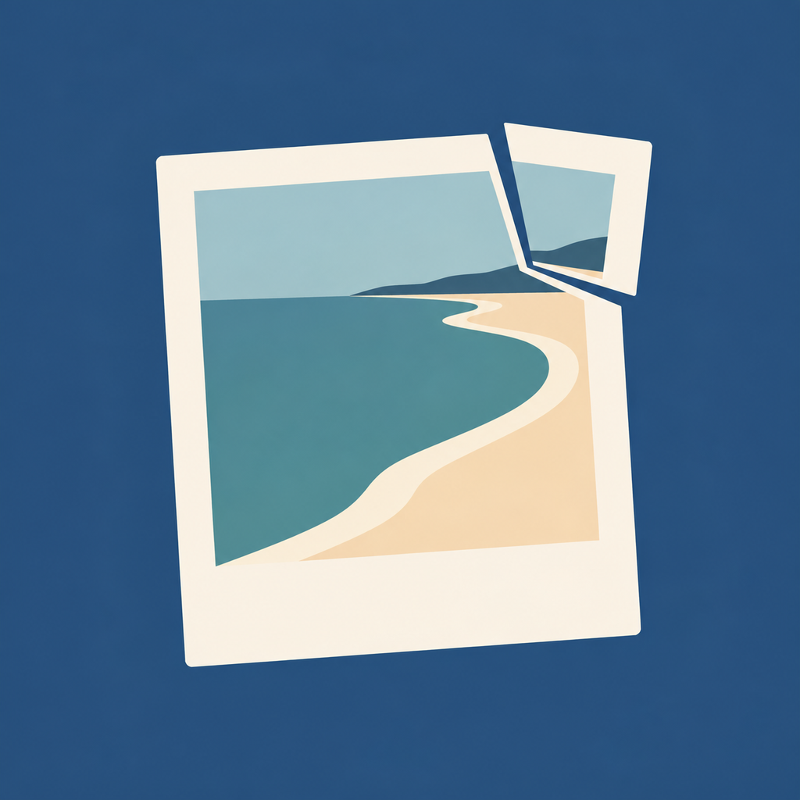
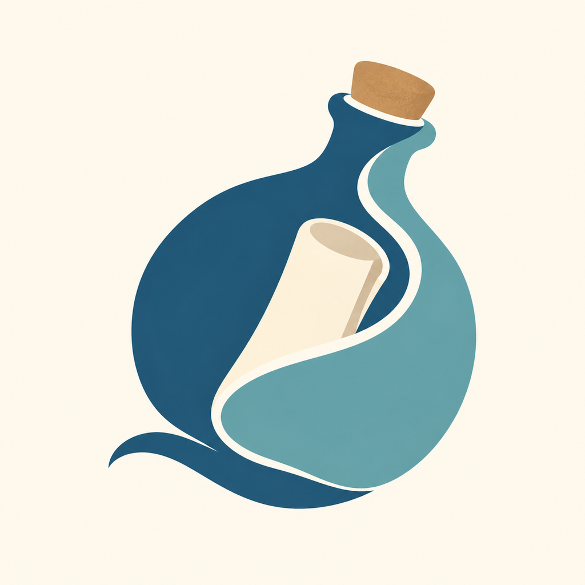

A · 翻开的照片
留下片段 → 照片 → 纸面翻角
照片承载瞬间，翻角表达重新打开。原方案保持不变。
48 px64 px圆形
留下生活片段，封存，在未来重新遇见。先找到能代指这些行为的物品，再决定它的视觉风格。

留下片段 → 照片 → 纸面翻角
照片承载瞬间，翻角表达重新打开。原方案保持不变。

记录与回看 → 册子 → 纸页层叠
强调私人记录与回看，纸页中保留海岸。

封存与再遇见 → 瓶中纸片 → 半透明玻璃
突出保留、漂泊与未来的遇见。

保存瞬间 → 照片 → 局部错位
拆开一个角，让画面未完全闭合。
重读过去 → 册子 → 双页错位
纸页化成色面，用海岸线连接两页。

封存与漂泊 → 瓶中纸片 → 洋流拆分
瓶身拆成深浅两股流面，纸片仍被保留。